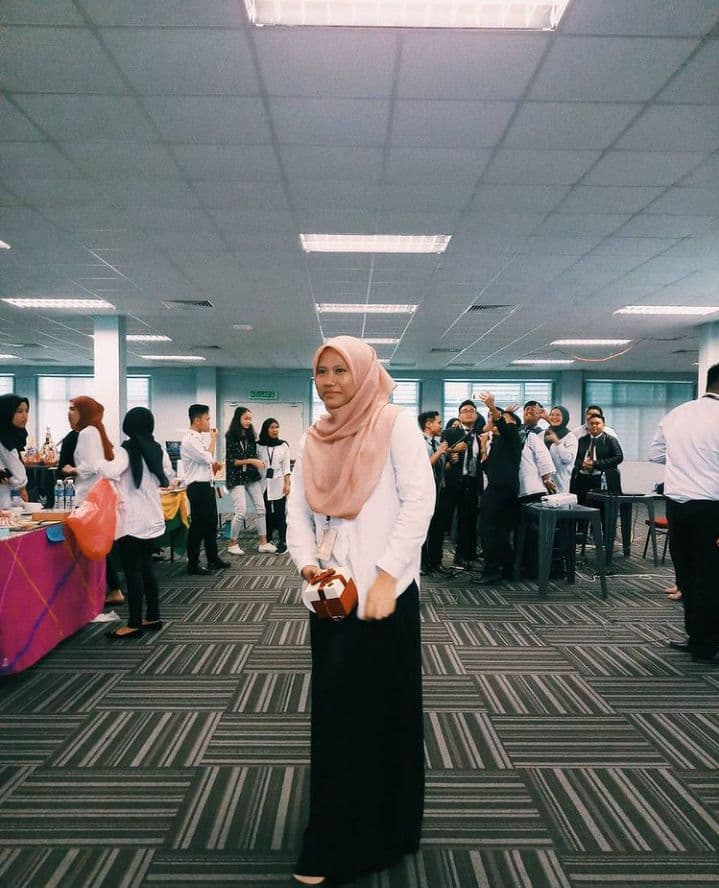
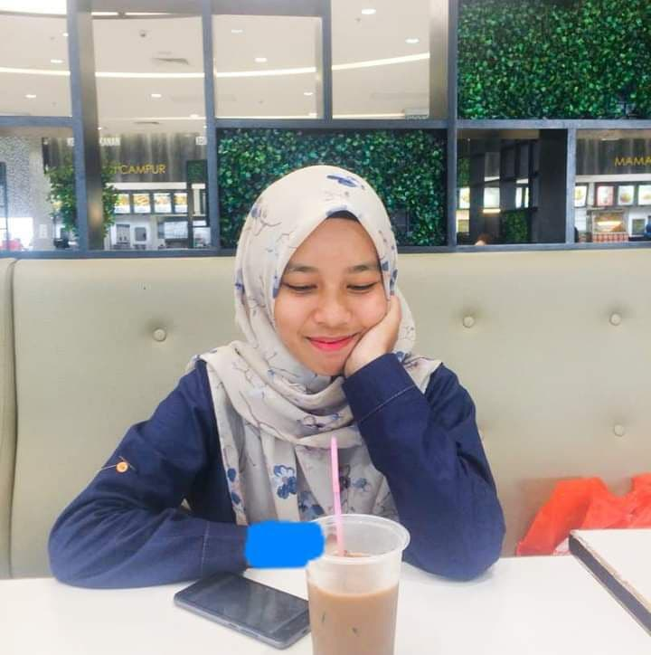
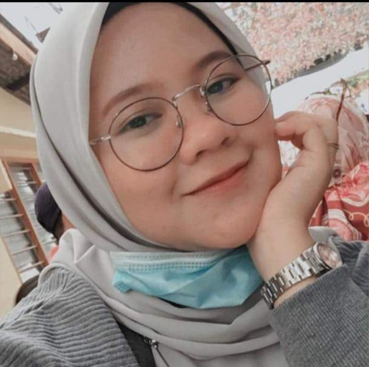
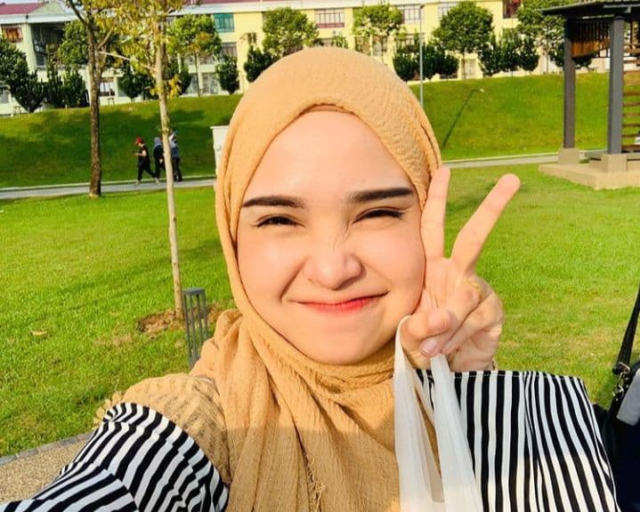
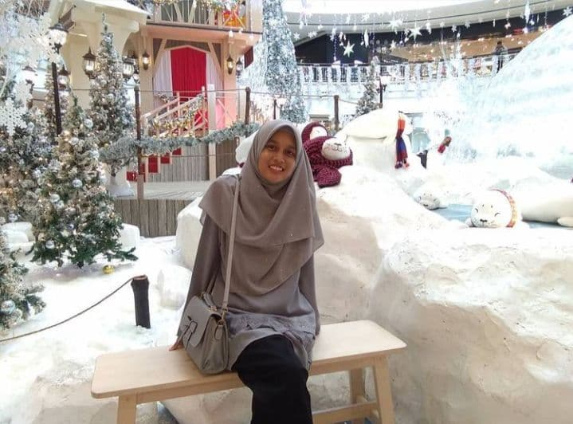

| Nurul Huda | ||
|  | ||
|---|---|---|
| Her name is Nurul Huda and I call her Huda. First time I got to know her when we both went to school at SK Beluru in 2004. At that time, we were both 5 years old. We have been close ever since and then we were schoolmate while in high school. Even though we were not a classmate during 2012-2014, we remained close. In 2015-2016, once again we were destined to be classmates. After finishing SPM, we together continue form 6 at PTERMM and also in the same class for 1 year and a half. At the end of STPM, we each continue to study at a higher level, which is a bachelor's degree. Huda has received an offer at UITM Samarahan, Sarawak. Although it’s far away, we often communicate each other through social media such as Whatsapp, Instagram and so on. Now, we have been friends for 16 years. |
| Nur Syafiqah | ||
|  | ||
|---|---|---|
| First time I got to know Syafiqah is when she entered my class in 2013 (form 2). At that time she was a new student who changed schools to go to school at SMK Simpang Beluru. We became close at that time until 2015. Then we were different classes in 2015-2016 and our relationship became a little strained. Then Syafiqah also continued her studies in form 6 where she and I became classmates. Our relationship became closer again until now even though each of us has continued to study elsewhere. Syafiqah got an offer to study at UITM Puncak Perdana, Shah Alam. Despite the distance, we also often communicate through social media. |
| Nurul Najiha | ||
|  | ||
|---|---|---|
| Najiha or Jay is a close friend and the first person that I know at UITM. We both knew each other during the orientation in 2019. After that we became close to each other because we were classmates at that time until now. Then we became roommate and housemate in 2020 that is during semester 3. However, we became housemate and roommate only for a month. This happened due to the outbreak of the disease Covid-19 and our university had to close as a result of the outbreak. We returned to our hometowns. Despite the distance, we often communicate on Whatsapp. |
| Noor Masitah | ||
|  | ||
|---|---|---|
| This is Masitah and I call her Mass. She was very pretty. First time I got to know her when we first became classmates during form 6 in 2017. After that we became close to each other. Now, he also continues to study for a bachelor's degree at UniKL, Kuala Lumpur. |
| Farah Hanan | ||
|  | ||
|---|---|---|
| This is Farah. We got to know each other when we were registering for a class in 2017 which was during form 6. It was Farah and I became classmates at that time and we became close. Until now, we are still close to each other even though we are far apart. Just like other friends, Farah also continued her studies with a bachelor's degree at Universiti Utara Malaysia (UUM). |